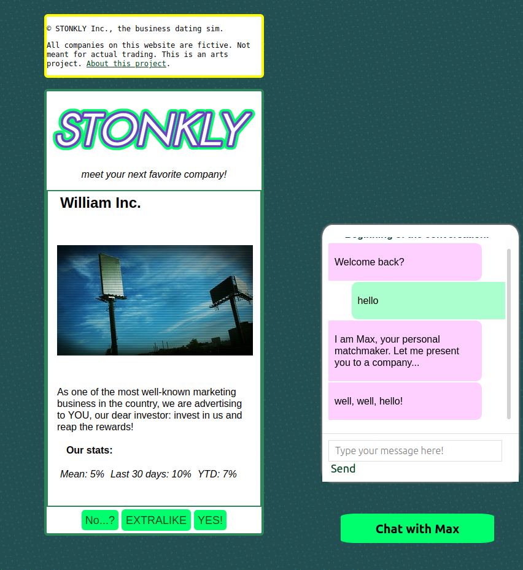
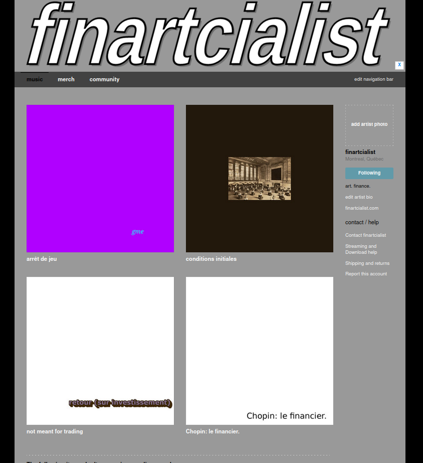
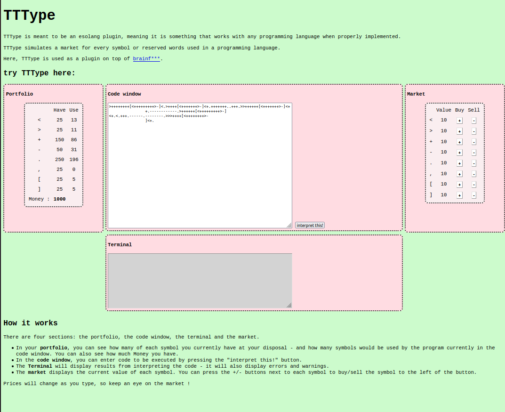

extenso

STONKLY, simulation de rencarts amoureux avec des entreprises. Disponible sur STONKLY.

- arrêt de jeu, oeuvre sonore en deux parties. Disponibe sur Bandcamp.
- Conditions initiales, réalisé durant une résidence autonome, mai 2020. Disponibe sur Bandcamp.

TTType, une extension ésotérique de programmation. Concrétisation d'une contrainte créative de marché appliquée à la programmation. Disponibe sur votre navigateur web.
démarche artistique
J'ai découvert Ibghy & Lemmens un peu avant de commencer mes études de maîtrise en ingénierie financière, à HEC Montréal -- en 2014.
Une année ou deux plus tard, j'eu l'idée de sonoriser un algorithme réalisé pour un cours de Simulations Monte Carlo.
À la recherche d'inspiration artistique, j'écumai l'Internet afin de trouver des oeuvres d'ici et d'ailleurs pouvant servir de nourriture intellectuelle me permettant de mieux définir mon propre projet. Au fil des clics, je pris connaissance des œuvres du Network Ensemble et de celles de Goldin+Senneby, et de plusieurs autres.